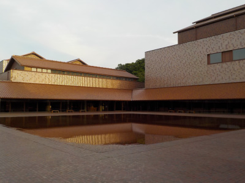
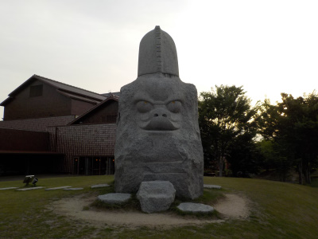
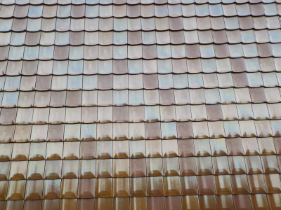
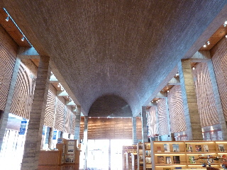
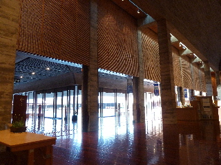

・（てん）と－（せん）、いろ、かたち 島根の美術室
2019/05/25
美術の勉強みたいな企画展を見に行きました。
美術館ではよく展示物の横に説明が書いてあるんですが、その内容がいつもと違っていました。
絵の描き方だったり、見方だったり、道具だったりします。
本物を見ながら、比べながら説明を読むので分かり易いですね。学校じゃ出来ない内容でした。
こうゆうのって忘れた頃にまた見たいって思いました。10年に1回くらいあるといいな。



グラントワはいつも綺麗ですね。いい建物だなー。
巨匠たちの英国水彩画展を見ました。
2012/08/16
マンチェスター大学ウィットワース美術館所蔵作品です。
水彩画っていっても色々あるもんですね。
感心しながら綺麗な絵を鑑賞しました。
展示品が多かったので、のんびり鑑賞していたら時間がかかりました。
いい作品が沢山見れて良かったです。
作品の説明って出来ないので、詳しくはグラントワのホームページを見てください。
http://www.grandtoit.jp/

グラントワの建物は立派です。

今日は静かで、のんびりと過ごせました。
夏の休日に美術館賞はいかがでしょうか。
冷房が効いた美術館は快適でしたよ。